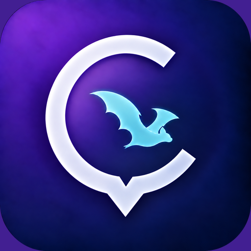

CrimapTérminos de uso y reglas de la comunidad
Última actualización: 9 de octubre de 2026
Estos términos regulan el uso de Crimap. Al publicar, comentar, enviar mensajes o participar en clubes, aceptás estas reglas y la Política de privacidad.
1. Finalidad y límites
Crimap ayuda a compartir información comunitaria, orientarse, encontrar servicios, organizar actividades y comunicarse. La información proviene de usuarios y fuentes externas y puede contener errores o demoras.
2. Cuenta y edad
- Debés proporcionar información verdadera y proteger el acceso a tu cuenta.
- Crimap no está dirigida a menores de 13 años. De 13 a 19 años se puede participar en la comunidad, publicar mascotas y avisos de infraestructura. Para publicar o confirmar hechos de seguridad se requiere declarar al menos 20 años.
- Sos responsable del contenido y de las acciones realizadas desde tu cuenta.
3. Contenido permitido
Podés publicar información de interés comunitario y material sobre el que tengas derechos. Al publicar, autorizás a Crimap a alojarlo y mostrarlo dentro del servicio mientras permanezca activo.
4. Conductas prohibidas
- Amenazas, acoso, discriminación, explotación sexual, violencia gráfica injustificada o contenido ilegal.
- Suplantación de identidad, estafas, spam, enlaces maliciosos o información deliberadamente falsa.
- Publicar domicilios, teléfonos, imágenes u otros datos personales de terceros sin autorización.
- Acusaciones identificables sin respaldo o reportes falsos que puedan perjudicar a personas o comercios.
- Organizar o promocionar rifas y sorteos por medio de publicaciones, mensajes o enlaces de Crimap, aunque el pago o la participación se gestionen fuera de la app.
5. Moderación, denuncia y bloqueo
Los usuarios pueden denunciar contenido y bloquear cuentas mediante las opciones de la app. Crimap puede ocultar o eliminar contenido, limitar funciones o suspender cuentas para proteger a la comunidad, cumplir la ley o investigar abusos. También puede conservar de forma limitada los registros necesarios para prevenir reincidencias o atender obligaciones legales.
6. Sorteos retirados
Crimap ya no ofrece rifas ni sorteos. Las publicaciones anteriores están ocultas y no se aceptan nuevas reservas. Crimap no administró pagos ni garantiza premios; si participaste en un sorteo anterior y necesitás información sobre tus datos, escribí al contacto indicado al final de esta página.
7. Ubicación, rutas y seguridad
Las rutas, farmacias, noticias, reportes y ubicaciones son información orientativa. Verificá horarios, direcciones y condiciones reales antes de actuar. No uses la app de una forma que distraiga mientras conducís.
El botón SOS y Modo Guardián avisan a los contactos de confianza que configuraste. Modo Guardián funciona únicamente después de que lo activás, puede mostrar una notificación permanente y puede fallar por ruido, permisos, falta del reconocimiento local o restricciones del teléfono. Cuando reconoce la frase elegida muestra una cuenta regresiva cancelable antes de enviar el auxilio. Estas funciones no llaman automáticamente a la policía, al 911 ni a otro servicio oficial.
8. Mensajes y voz
No compartas información sensible. Las personas que reciben mensajes o participan en una sala pueden copiar, reenviar o grabar lo recibido por medios propios. El uso abusivo puede denunciarse y dar lugar a restricciones.
9. Baja y cambios
Podés dejar de usar Crimap y eliminar tu cuenta desde el menú. Estos términos pueden actualizarse cuando cambien las funciones o las normas; una versión relevante nueva podrá requerir otra aceptación.
10. Contacto
Consultas, reclamos o pedidos: crimap.app@gmail.com.